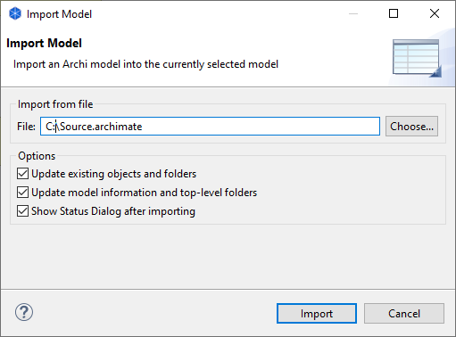

可以将另一个Archi模型导入并合并到当前选定的模型中。然后 ，阿奇您可以将导入的模型维护为参考模型，阿奇可以单独更新并根据需要重新导入。
导入其他模型时需要考虑的一些事项：
要将另一个Archi模型导入当前选定的模型 ，请从主文件菜单中选择 “将Archi模型导入当前选定的模型”。将出现以下对话框 ：

导入另一个模型
更新现有对象和文件夹
如果选中此选项，则导入时将更新任何现有目标对象和文件夹。
更新模型信息和顶级文件夹
如果选择此选项，则如果模型节点（名称、文档、属性）有任何更改，这些更改将被更新。如果任何顶级文件夹（文档、属性）发生更改，这些也将被更新。
导入后显示状态对话框
如果选择此选项，则在导入模型后会显示状态对话框。这将列出更新或更改的内容。